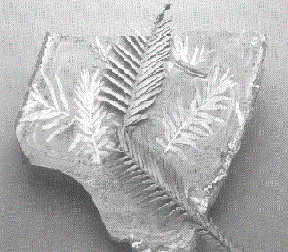

Student Project
Rosemary
"My name is Rosemary. I am a member of our E-mail club. I am a student in year 8 and I am 13 years old. The school I go to is called Abbotsleigh, and it is an Anglican school. I really like computers, art and nature so your project really appeals to me."
"In Australia there are many fascinating trees and other plants. One of the most unusual is the Wollemi Pine. Its Latin name is Wollemi nobilis. It is a recently-discovered genus and species in the conifer family Araucariaceae. This could be the oldest species of tree in the world. They are found only in one small grove situated in the Wollemi National Park in an area of mountainous gorges west of Sydney in an area known as the Blue Mountains."
Gorge with Wollemi Pines Visible
Young Pines
"This collection of juvenile and mature trees was found by chance when a Wildlife field officer was bushwalking. If there was a bushfire or a spread of fungal disease the entire population could be destroyed. For these reasons, the exact position has not been released. This will limit access to the areas. I of course cannot give an eye-witness description, but there is quite an amount of information available from the National Parks and Wildlife Services from whom I have obtained these pictures."
Wollemi Pine Seedling in Forest Floor - Leaf Litter Is Mainly Eucalyptus Leaves
"To ensure the future of these trees, scientists and resarchers are working on ways to clone the Wollemis. Some of these methods include vegetative cuttings and tissue culture. Experiments are also being conducted using seeds. The Wollemi Pines are considered to be living fossils. These features of the Wollemi Pines remarkably match fossils of conifers dating back to the Jurassic period."

Jurassic Fossil Compared to Wollemi Pine Leaves
"The trees can grow to a height of 35 metres (about 105 feet) and have a trunk with a diameter of over 1 metre (about 3 feet). The leaves range in colour from a bright lime-green on the younger foliage to an apple-green on the mature foliage. The trunk is particularly unusual being covered with brown, knobbly, spongy bark."
Section of Wollemi Pine Bark
"Like other Auraucariaceae they are bisexual. The seeds are winged. Hopefully the species will survive long enough to develop into an established part of nature."
"I hope you enjoy learning about this ancient pine."
Best wishes from
Rosemary
c. Rosemary
Year 8
The Abbotsleigh School
Sydney, NSW, Australia
Wollemi Pine
Latin Name: Wollemi nobilis
Age: Probably the oldest species of tree in the world
Circumference: Usually 3 feet
Location: Only in one small grove in the Wollemi National Park, west of Sydney, Australia, in the Blue Mountains
Here is a response to Rosemary's Project sent in by Bill Barrieu:
Date: Tue, 08 Oct 1996 02:05:54 -0700
From: "William E. Barieau"
To: jj68@NYU.EDU
Subject: Wollemi Pine
I am a fellow inhabitant of planet earth and want you to know that
I enjoyed learning about Australia's Wollimi Pine from the 8 year old
Australian student, Rosmary. Maybe you could pass it along that
this complete stranger was impressed by her presentation.
That's all I wanted to say, and that I have great hopes for
the kids of the world when I see things like this on the net.
Cheers!
- - - Bill Barieau
 Return to Main Page
Return to Main Page
June Julian jj68@nyu.edu